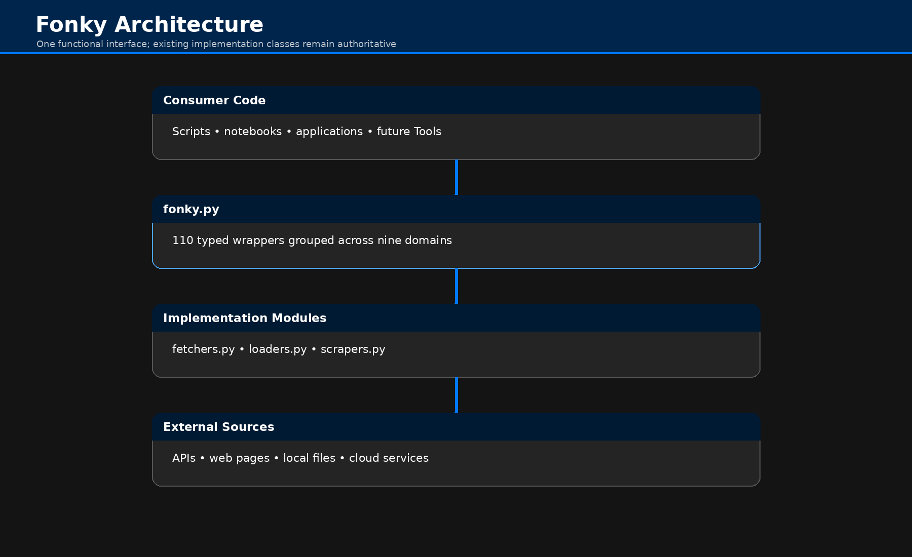
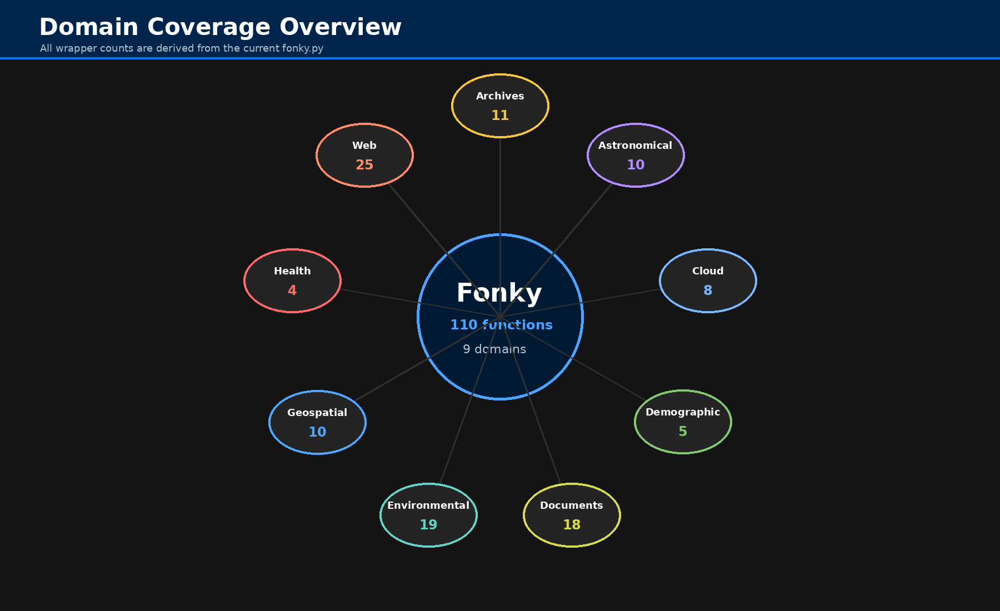

Fonky¶

Fonky is a Python framework for retrieving, loading, and extracting structured information from public APIs, cloud services, local documents, and web content. The project separates implementation classes from a consolidated functional calling surface so applications can choose either level of control without duplicating provider logic.
The current functional interface in fonky.py exposes 110 module-level functions across 9 domains. Those functions delegate to implementations in fetchers.py, loaders.py, and scrapers.py.
Design at a Glance¶

consumer code
↓
fonky.py wrapper
↓
fresh implementation instance
↓
fetchers.py / loaders.py / scrapers.py
↓
provider, file, cloud service, or web page
↓
returned Python result
The wrapper layer does not recreate request construction, authentication, parsing, data shaping, document loading, or scraping behavior. Those responsibilities remain in the implementation classes.
Domain Coverage¶

| Domain | Functional Operations | Representative Capabilities |
|---|---|---|
| Archives | 11 | ArXiv, Drive search, Wikipedia, news, Google Search, government data, Congress, Internet Archive, Grokipedia |
| Astronomical | 10 | Naval Observatory, satellites, nearby objects, Open Science, space weather, catalogs and charts |
| Cloud | 8 | Google Drive, OneDrive, Google Cloud, AWS S3, Speech-to-Text |
| Demographic | 5 | Census, Socrata, United Nations, world population, open-city data |
| Documents | 18 | Text, CSV, PDF, Word, Excel, Markdown, HTML, JSON, XML, email, Outlook, PowerPoint, Jupyter |
| Environmental | 19 | Weather, climate, air quality, earthquakes, water, tides, UV, fires, natural events |
| Geospatial | 10 | Geocoding, reverse geocoding, address validation, directions, imagery, ScienceBase, National Map |
| Health | 4 | HealthData, global health data, CDC WONDER, PubMed |
| Web | 25 | Fetching, crawling, HTML conversion, structured extraction, web loading, scraping, image encoding |
Functional Interface¶
from fonky import fonky
documents = fonky.load_pdf(
path='sample.pdf',
mode='single',
extract='plain',
include=False,
format='markdown-img',
size=1000,
overlap=150,
has_tables=True
)
Direct Class Interface¶
from fonky.loaders import PdfLoader
loader = PdfLoader( )
documents = loader.load(
path='sample.pdf',
mode='single',
extract='plain',
include=False,
format='markdown-img',
size=1000,
overlap=150,
has_tables=True
)
Documentation Map¶
| Guide | Purpose |
|---|---|
| Getting Started | Installation, setup, first calls, and verification |
| Configuration | Source-derived environment variable and runtime configuration reference |
| Architecture | Wrapper boundaries, execution paths, state, and supporting modules |
| Usage | Practical examples across all domains |
| User Guide | Operational guidance and interface selection |
| Functional API | Exhaustive reference for all 110 wrappers |
| Fetchers | Complete fetcher class/method inventory |
| Loaders | Complete loader class/method inventory |
| Scrapers | Complete scraper class/method inventory |
| Models | Structured models and ToolDef infrastructure |
| Processors | Processing and parser classes |
| Core | Core result model |
Source of truth
These pages are generated from the current Fonky source files. The implementation modules remain authoritative when behavior and documentation diverge.